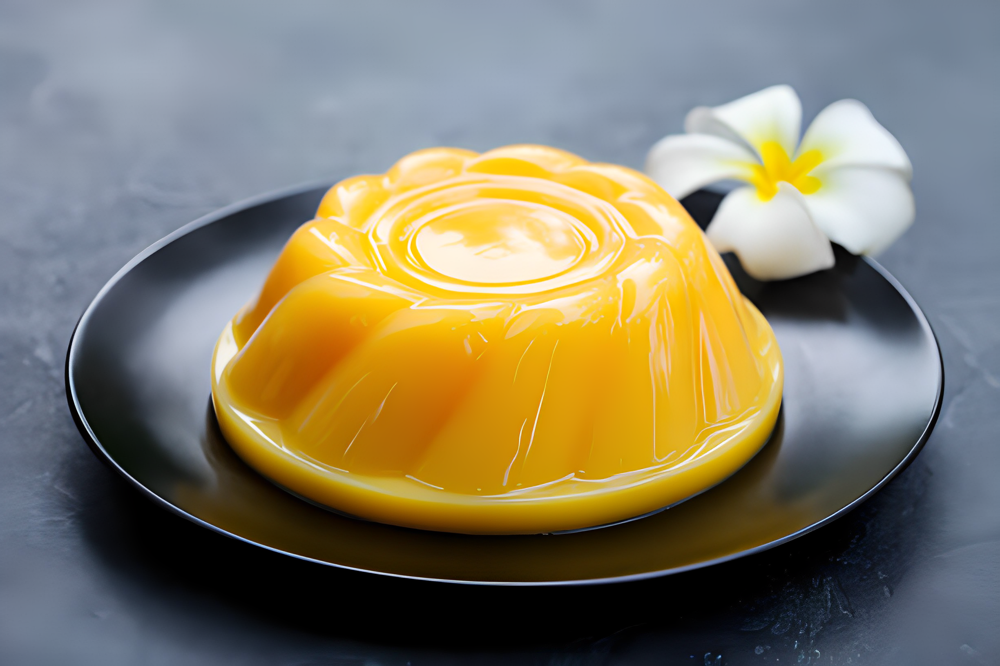

Ingredients
2 ripe mangoes, peeled and diced
1 cup mango puree (from additional mangoes)
1/2 cup sugar (adjust according to taste)
1 cup milk
1 cup heavy cream
1/4 cup cornstarch
1/4 cup water
1 teaspoon vanilla extract

Instructions
1.Prepare Mango Puree
Peel and dice two ripe mangoes.
Blend the mango pieces until you get a smooth puree. Set aside 1 cup for the pudding.
2.Mix Cornstarch
In a small bowl, mix the cornstarch with water to make a smooth paste. Set aside.
3.Combine Ingredients
In a saucepan, combine sugar, milk, and heavy cream over medium heat. Stir until the sugar is dissolved.
4.Add Mango Puree
Add the mango puree to the saucepan and mix well.
5.Thicken the Mixture
Gradually whisk in the cornstarch paste to the mixture in the saucepan. Continue stirring to avoid lumps.
6.Simmer
Cook the mixture over medium heat, stirring constantly, until it thickens. This usually takes about 5-7 minutes.
7.Remove from Heat
Once the mixture has thickened, remove the saucepan from heat.
8.Add Vanilla Extract
Stir in the vanilla extract for added flavor.
9.Cooling
Let the mixture cool for a few minutes.
10.Pour into Molds
Pour the mango pudding mixture into individual molds or a large serving dish.
11.Chill
Refrigerate the pudding for at least 4 hours or until it is set.
12.Serve
Once chilled and set, serve the mango pudding cold. You can garnish it with additional diced mangoes or a dollop of whipped cream if desired.
Enjoy your homemade mango pudding!😋